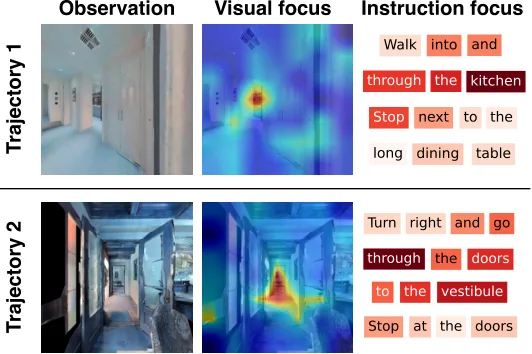
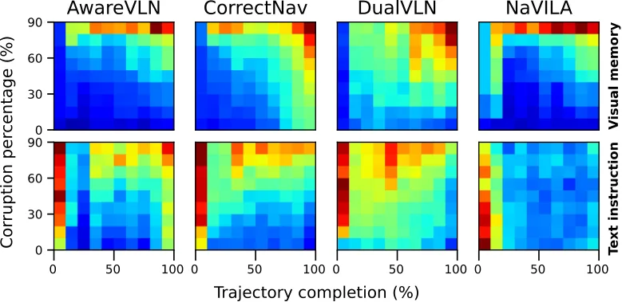
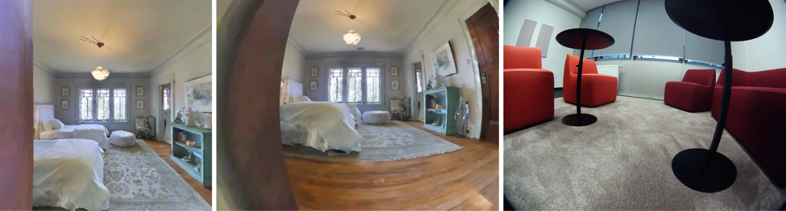

VLM-VLN 依赖什么：策略行为的解释与操控
What do VLM-Based Vision-Language Navigation Models Rely on: Interpreting and Steering Policy Behavior
结果显示策略同时依赖多种输入模态；从 VLM 中提取的行为 activation vector 可零样本迁移到分布外真实场景，无需额外微调。
作者、单位与技术谱系 · Research context
作者与单位
研究脉络
- VLM-based VLN方法上游关系：论文在 VLN 与 VLM backbone 的融合上做因果解释和 steering。[arXiv 官方 HTML v1]
- activation steering方法上游关系：本文把内部语义激活用于零样本导航行为迁移。[arXiv 官方 HTML v1]
合作网络
- VLN interpretabilityUTN / ETH / Inria / ENS → 作者团队关系：共同署名/单位[arXiv 官方 HTML v1]
- VLN interpretabilityCorrectNav 等 VLN baselines → 本文实验关系：公开比较/技术依赖[arXiv 官方 HTML v1]
作者和单位是原文事实；技术脉络是基于公开原文/项目关系的解读；未据此推断导师或师生关系。
方法本质拆解 · What actually changed
训练/参数
原文显示该方法基于现有模型或策略进行训练/评估，具体参数冻结与训练预算以原文为准。该条只记录已核验的系统层事实，不把推测写成配置。
约束与条件
方法把几何、时间、语义或动作表示作为额外条件。约束作用位置和是否硬约束以论文公式与实验协议为准。
推理流程
推理包含结构化表示、滚动执行或激活/策略处理。它不是凭标题推断的传统后端优化。
方法本质
核心是把空间证据接入决策变量，使模型在输入变化或长时程执行中保留可验证的几何/语义状态。
输入观测与结构化先验 + 作用于表示/动作的约束或聚合 + 闭环执行/干预 → 提升空间决策可靠性。

桥接价值Bridge
桥接价值
它把空间决策的“是否成功”推进为“依赖了哪些证据、能否被安全操控”。这为可靠导航中的故障诊断、模态降级和策略恢复提供可测量接口。
方法与模块Method
方法摘要
使用 ISS、Integrated Gradients 与 Token Activation Map 分析视觉、文本和记忆的敏感性。再用 semantic steering/value-vector 与 activation steering 改变内部行为表示，并测试真实分布外部署。
可迁移模块
可迁移的是输入模态干预、记忆鲁棒性评估和行为向量抽取。它们可以接到导航状态估计，检测策略是否过度依赖某个视觉线索。

证据Evidence
关键证据与数字
论文包含 V-A 至 V-I 共 9 个实验子节，并报告 activation steering 在 out-of-distribution real-world scenarios 中无需 additional fine-tuning 改善表现；具体 success-rate 数字待核验。
边界与下一步Limits & Next Step
边界与风险
干预指标依赖模型内部 token/activation 可访问，换模型架构后未必可复现。 steering 可能提高某一行为却破坏避障、停止条件或长期任务进度。
下一步实验
在同一 VLN policy 上逐项遮蔽视觉、指令、memory，联合记录成功率、碰撞率、进度和校准误差。再比较 activation steering、重新规划和模态降级三种恢复方式，明确行为向量的安全边界。
{kind=link}

{kind=link}
